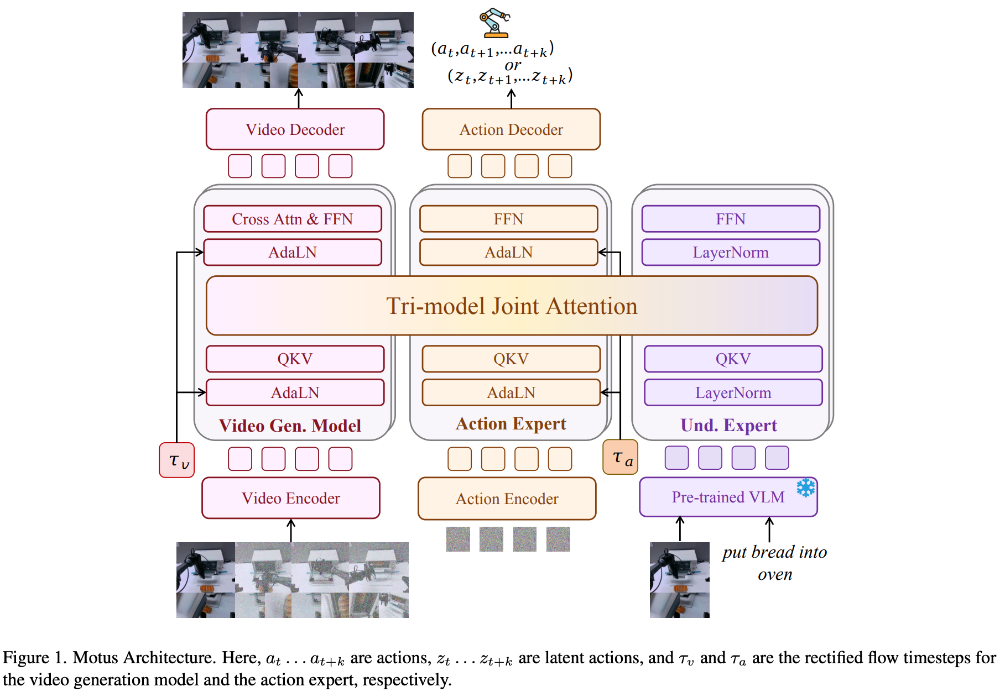
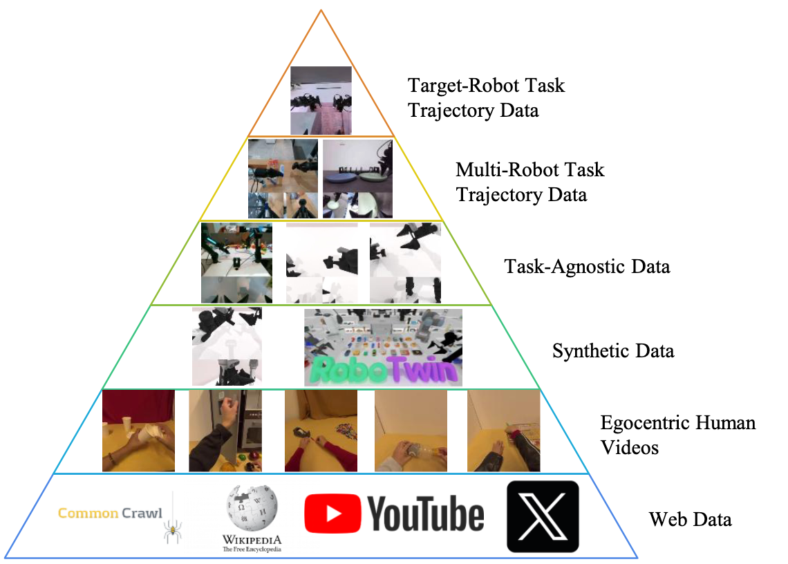
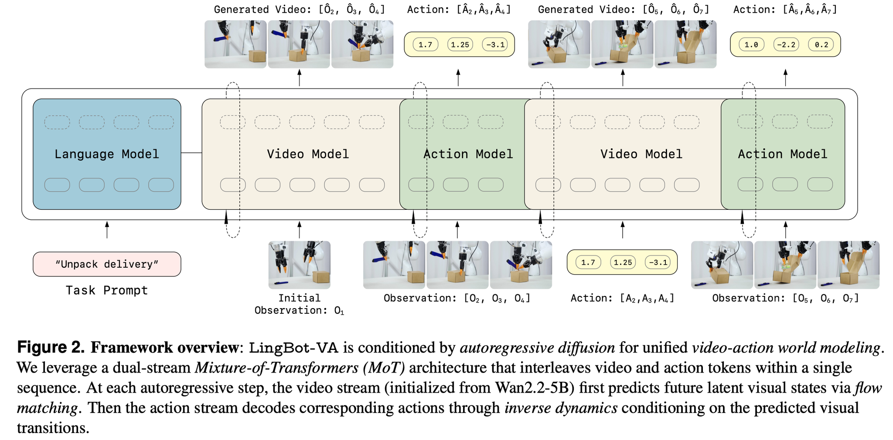
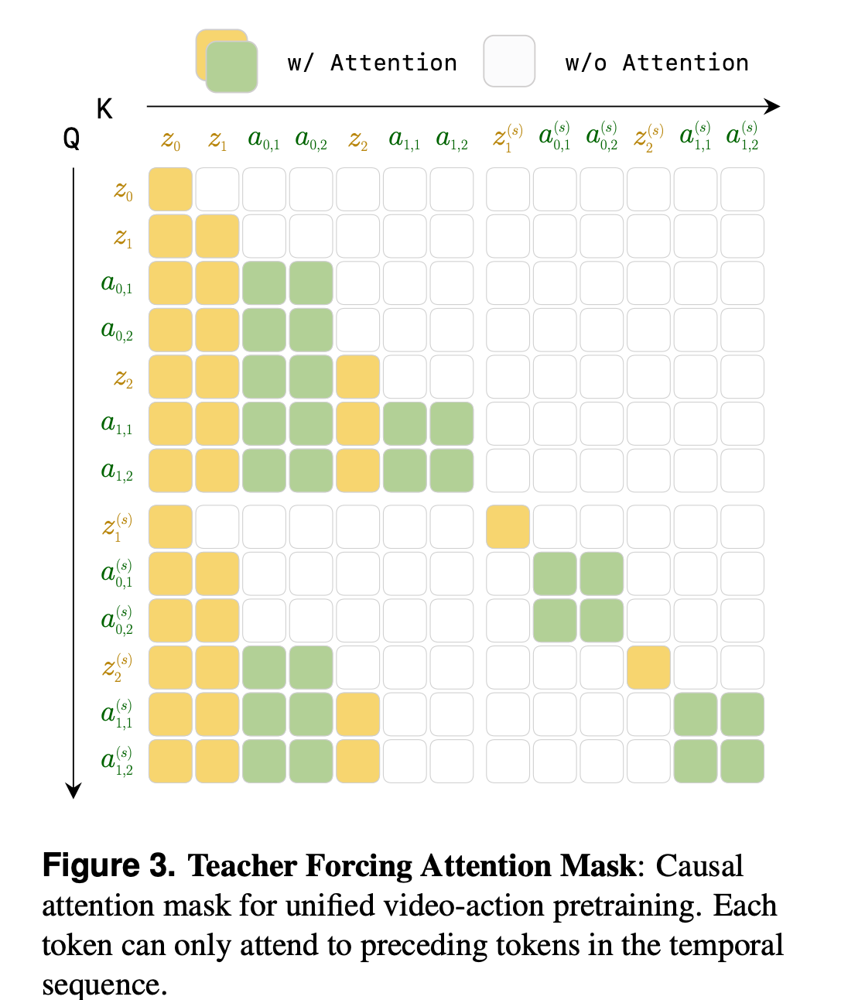
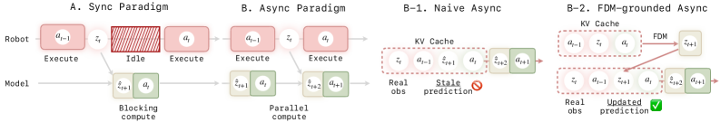

World Model 05
Motus 与 LingBot-VA：专家世界模型
MoE/MoT 路线不强行让一个头负责所有事，而是让理解专家、视频生成专家和动作专家共享一部分上下文， 再通过调度器切换 VLA、WM、IDM、VGM 等模式。
Motus：三类专家合到一个 MoT
Motus 的核心是 VLM 负责理解，VGM 负责生成，Action expert 负责控制。它用 optical flow 提取 latent action， 再用三阶段训练把 web/human/synthetic/robot 数据逐步接到目标机器人轨迹上。


LingBot-VA：video-action 交错输出
LingBot-VA 更强调 causal video-action world modeling：视频 token 和动作 token 共享 latent space， 通过 closed-loop rollout 和 asynchronous inference 让机器人一边执行当前动作块，一边预测下一段。



代码视角
MoT 的实现重点不是 if-else 包起来的多任务，而是让不同模式共享时序上下文。 latent action 则相当于先从视频变化里抽一个中间动作，再映射到机器人动作空间。
def motus_forward(tokens, mode):
hidden = shared_attention(tokens)
if mode == "video_generation":
return video_expert(hidden)
if mode == "inverse_dynamics":
return latent_action_expert(hidden)
if mode == "robot_policy":
z = latent_action_expert(hidden)
return robot_action_decoder(z)
def async_control_loop(obs):
while True:
future_video, next_actions = model.predict_next_chunk(obs)
execute(current_actions)
obs = read_robot_observation()
current_actions = next_actions实现重点
- 光流 latent action 是跨 embodiment 的桥，但它必须再经过 action decoder 才能落到具体机器人。
- MoT 的共享 attention 能保留跨模态上下文，专家 FFN 保留各自计算分布，适合多模式切换。
- LingBot-VA 的异步推理是在承认视频生成慢的前提下，把延迟藏进执行过程，而不是假装没有延迟。
Insight
专家世界模型适合统一多功能，但复杂度是真实成本。它的优势在“一个系统能做很多事”， 不是“部署一定更简单”。如果目标是高频闭环，异步和分块执行会比模型指标更关键。